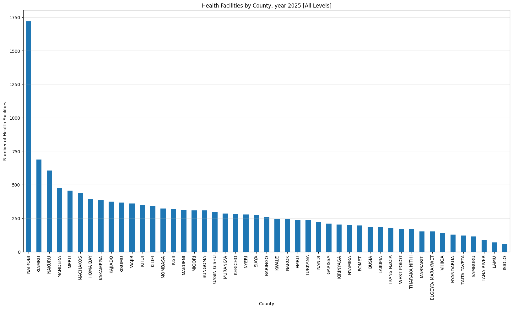

import matplotlib.pyplot as plt
import pygadm
import pandas as pd
import requests
from io import StringIO
import geopandas as gpd
from adjustText import adjust_text
from IPython.display import display, Markdown
import matplotlib.colors as colorsIntroduction
Using the data from Licenced HealthFacilities for the year 2025 1, we analyze hospital distribution in kenya per county.
Kenya’s healthcare system employs a six-tiered structure. Level 1 Community Health Units (CHUs) focused on preventive and promotive healthcare care through community health workers. Level 2 dispensaries and clinics focus on basic outpatient services for common ailments. Level 3 health centers provide curative and preventative care, including maternal and child health. Level 4 sub-county and district hospitals offer primary referral services. Level 5 county referral and teaching hospitals handle secondary referrals and specialized care. Finally, Level 6 national referral hospitals, such as Kenyatta National Hospital provide the highest level of tertiary care 2 3.
Analysis
Importing Libraries
Data
# Get the data
health_facilities_data = requests.get(
"https://kmpdc.go.ke/Registers/H-Facilities.php").text
# Parse the data
health_facilities_df = pd.read_html(StringIO(health_facilities_data))[0]
# Drop columns that are not useful
health_facilities_df = health_facilities_df.drop([
'View', # Empty column
'status', # All values are 'Active'
'Reg_No', # Not useful because it's unique and obscured
], axis=1)
# Make levels categorical
health_facilities_df['Level'] = pd.Categorical(
health_facilities_df['Level'].str.lower().str.strip().str.upper())
# drop duplicates
health_facilities_df = health_facilities_df.drop_duplicates()
health_facilities_df| Facility_Name | Address | Facility_Type | Level | Bed_Capacity | County | |
|---|---|---|---|---|---|---|
| 0 | A.C.K ST. PAULS MIHUTI DISPENSARY | P.O BOX 227-10202 KANGEMA | DISPENSARY | LEVEL 2 | 0 | MURANG'A |
| 1 | NEEMA MEDICARE MEDICAL CENTRE | P.O BOX 59461-00200 NAIROBI | MEDICAL CENTRE | LEVEL 3B | 0 | NAIROBI |
| 2 | AMUNG\'ENTI CATHOLIC DISPESARY | P.O BOX 75-60600 MAUA | DISPENSARY | LEVEL 2 | 0 | MERU |
| 3 | LIFOG CENTRE MEDICAL CLINIC | P.O BOX 84-80100 MOMBASA | MEDICAL CLINIC | LEVEL 2 | 0 | MOMBASA |
| 4 | RAPHA JOY MEDICAL CLINIC | P.O BOX 244-00221 LAIKIPIA | MEDICAL CLINIC | LEVEL 2 | 0 | KIAMBU |
| ... | ... | ... | ... | ... | ... | ... |
| 14094 | NJORO HUDUMA MEDICAL CLINIC NAKURU | P.O BOX 86-20107 NJORO | NURSING HOME | LEVEL 3A | 43 | NAKURU |
| 14095 | DYNAMED MEDICAL CLINIC | P.O BOX 454-01001 KALIMONI | MEDICAL CLINIC | LEVEL 2 | 0 | KIAMBU |
| 14096 | SLENMARK MEDICAL CLINIC | P.O BOX 267-10304 KUTUS | MEDICAL CENTRE | LEVEL 3B | 0 | KIRINYAGA |
| 14097 | SLENMAC CARE CENTRE LIMITED | P.O BOX 267- KERUGOYA | MEDICAL CENTRE | LEVEL 3B | 40 | KIRINYAGA |
| 14098 | LUIZ HOASIS MEDICAL CENTRE EBATE | P.O BOX 366-40200 KISII | MEDICAL CENTRE | LEVEL 3B | 16 | NYAMIRA |
14098 rows × 6 columns
def health_facilities_county(title: str, levels = None):
display(Markdown(
"\n"
f"### {title}"
"\n"))
df = health_facilities_df\
if levels == None\
else health_facilities_df[health_facilities_df['Level'].isin(levels)]
sizes = df.groupby('County').size()
sizes.sort_values(ascending=False)\
.plot(kind='bar', figsize=(20, 10))
plt.title(title)
plt.ylabel('Number of Health Facilities')
plt.xlabel('County')
plt.grid(True, alpha=0.3, axis='y',)
plt.show()
print(sizes.describe())
health_facilities_county(
'Health Facilities by County, year 2025 [All Levels]')Health Facilities by County, year 2025 [All Levels]
 count 47.000000 mean 299.957447 std 247.828654 min 61.000000 25% 180.500000 50% 261.000000 75% 342.500000 max 1718.000000 dtype: float64
health_facilities_county(
'Health Facilities by County, year 2025 [LEVEL 2]',
['LEVEL 2'])Health Facilities by County, year 2025 [LEVEL 2]
{kind=link}
count 47.000000
mean 183.297872
std 122.494350
min 35.000000
25% 111.500000
50% 170.000000
75% 217.000000
max 786.000000
dtype: float64health_facilities_county(
'Health Facilities by County, year 2025 [LEVEL 3]',
['LEVEL 3A', 'LEVEL 3B'])Health Facilities by County, year 2025 [LEVEL 3]
{kind=link}
count 47.000000
mean 92.510638
std 116.786850
min 13.000000
25% 36.500000
50% 60.000000
75% 104.000000
max 752.000000
dtype: float64health_facilities_county(
'Health Facilities by County, year 2025 [LEVEL 4]',
['LEVEL 4', 'LEVEL 4B'])Health Facilities by County, year 2025 [LEVEL 4]
{kind=link}
count 47.000000
mean 21.510638
std 22.531980
min 3.000000
25% 8.500000
50% 15.000000
75% 30.000000
max 145.000000
dtype: float64health_facilities_county(
'Health Facilities by County, year 2025 [LEVEL 5 and LEVEL 6]',
['LEVEL 5', 'LEVEL 6A', 'LEVEL 6B'])Health Facilities by County, year 2025 [LEVEL 5 and LEVEL 6]
{kind=link}
count 33.000000
mean 3.757576
std 6.015762
min 1.000000
25% 1.000000
50% 2.000000
75% 4.000000
max 35.000000
dtype: float64Only three counties have more than 500 helath facilities (Nairobi, Kiambu and Nakuru). Nairobi county leads with 1,718 facilities while Isiolo county tails with 61 facilities.
Hospital Density
If we gave each health facility a score depending on the level, and sum the scores for each county, we can get a simplistic estimate of the healthcare density in each county. The score is calculated as follows:
facility_level_values = {
j: i
for i, j
in enumerate(
health_facilities_df['Level'].sort_values().unique().tolist(), start = 1)
}
facility_level_values{'LEVEL 2': 1,
'LEVEL 3A': 2,
'LEVEL 3B': 3,
'LEVEL 4': 4,
'LEVEL 4B': 5,
'LEVEL 5': 6,
'LEVEL 6A': 7,
'LEVEL 6B': 8}density_data = [
[
county,
int(pd.to_numeric(facilities["Level"].apply(lambda x: facility_level_values[x])).sum()),
int(facilities["Level"].count()),
]
for county, facilities
in health_facilities_df.groupby('County')
]
density_df = pd.DataFrame(density_data, columns=['County', 'Density', 'Count'])\
.sort_values('Density', ascending=False)\
.reset_index(drop=True)
density_df| County | Density | Count | |
|---|---|---|---|
| 0 | NAIROBI | 3671 | 1718 |
| 1 | KIAMBU | 1257 | 688 |
| 2 | MANDERA | 1076 | 478 |
| 3 | NAKURU | 949 | 606 |
| 4 | HOMA BAY | 813 | 392 |
| 5 | WAJIR | 706 | 361 |
| 6 | MERU | 698 | 456 |
| 7 | KISUMU | 691 | 368 |
| 8 | MACHAKOS | 672 | 440 |
| 9 | KAKAMEGA | 654 | 384 |
| 10 | KISII | 649 | 318 |
| 11 | MOMBASA | 632 | 323 |
| 12 | KAJIADO | 631 | 375 |
| 13 | BUNGOMA | 599 | 309 |
| 14 | MIGORI | 528 | 309 |
| 15 | UASIN GISHU | 524 | 296 |
| 16 | KITUI | 511 | 347 |
| 17 | KILIFI | 491 | 338 |
| 18 | SIAYA | 452 | 274 |
| 19 | GARISSA | 447 | 209 |
| 20 | MAKUENI | 436 | 314 |
| 21 | NYERI | 433 | 278 |
| 22 | MURANG'A | 395 | 285 |
| 23 | KIRINYAGA | 386 | 204 |
| 24 | KERICHO | 379 | 283 |
| 25 | EMBU | 371 | 238 |
| 26 | BARINGO | 366 | 261 |
| 27 | NYAMIRA | 362 | 198 |
| 28 | NAROK | 356 | 244 |
| 29 | TURKANA | 331 | 237 |
| 30 | KWALE | 328 | 244 |
| 31 | NANDI | 315 | 224 |
| 32 | BUSIA | 305 | 184 |
| 33 | TRANS NZOIA | 292 | 178 |
| 34 | LAIKIPIA | 283 | 183 |
| 35 | BOMET | 258 | 196 |
| 36 | THARAKA NITHI | 236 | 167 |
| 37 | VIHIGA | 231 | 137 |
| 38 | MARSABIT | 227 | 152 |
| 39 | WEST POKOT | 211 | 168 |
| 40 | ELGEYO/ MARAKWET | 201 | 151 |
| 41 | NYANDARUA | 194 | 129 |
| 42 | TAITA TAVETA | 193 | 121 |
| 43 | SAMBURU | 162 | 113 |
| 44 | TANA RIVER | 141 | 89 |
| 45 | LAMU | 113 | 70 |
| 46 | ISIOLO | 111 | 61 |
Get the geometry of the counties in Kenya, GADM (Global Administrative Areas).
gdf: gpd.geodataframe.GeoDataFrame = pygadm.Items(
name="Kenya", content_level=1).rename(columns={"NAME_1": "County"})
gdf = gdf.drop(columns=list(set(gdf.columns) - set(["geometry", "County"])),
axis=1)
gdf.head(5)| geometry | County | |
|---|---|---|
| 0 | MULTIPOLYGON (((35.7616 -0.1904, 35.7243 -0.19... | Baringo |
| 1 | MULTIPOLYGON (((35.2613 -1.0159, 35.2583 -1.02... | Bomet |
| 2 | MULTIPOLYGON (((34.8778 0.8339, 34.9138 0.8524... | Bungoma |
| 3 | MULTIPOLYGON (((34.0292 -0.0142, 34.0158 -0.02... | Busia |
| 4 | MULTIPOLYGON (((35.5272 0.2167, 35.5261 0.2183... | Elgeyo-Marakwet |
Merge the densities and the geometries
def format_county_name(county_name: pd.Series) -> pd.Series:
return county_name.str.strip().str.lower().str.replace(r'[^a-zA-Z0-9]+', '-', regex=True).str.title().unique()
density_df['County'] = format_county_name(density_df['County'])
gdf['County'] = format_county_name(gdf['County'])
merged_gdf = gdf.merge(density_df, on='County', how='left')
merged_gdf.head(5)| geometry | County | Density | Count | |
|---|---|---|---|---|
| 0 | MULTIPOLYGON (((35.7616 -0.1904, 35.7243 -0.19... | Baringo | 366 | 261 |
| 1 | MULTIPOLYGON (((35.2613 -1.0159, 35.2583 -1.02... | Bomet | 258 | 196 |
| 2 | MULTIPOLYGON (((34.8778 0.8339, 34.9138 0.8524... | Bungoma | 599 | 309 |
| 3 | MULTIPOLYGON (((34.0292 -0.0142, 34.0158 -0.02... | Busia | 305 | 184 |
| 4 | MULTIPOLYGON (((35.5272 0.2167, 35.5261 0.2183... | Elgeyo-Marakwet | 201 | 151 |
Plotting the simplistic densities gives us the following map.
# Create figure and axis
fig, ax = plt.subplots(1, 1, figsize=(12, 12))
# Create a custom colormap from green to red
cmap = colors.LinearSegmentedColormap.from_list('custom_cmap', ['#f2fff2', '#ff0000'])
# Plot with hospital count determining the color
merged_gdf.plot(
ax=ax,
column='Density',
cmap=cmap,
legend=True,
legend_kwds={'label': "Hospital Density", 'orientation': "vertical"},
linewidth=0.1, edgecolor='black'
)
texts = [
ax.text(
row.geometry.centroid.x,
row.geometry.centroid.y,
f"{row['County']}-{row['Density']}", # Just show the count
fontsize=9,
ha='center',
va='center',
color='black',
# fontweight='bold',
# bbox=dict(facecolor='white', alpha=0.7, boxstyle='round,pad=0.3')
)
for idx, row
in merged_gdf.iterrows()]
adjust_text(texts, arrowprops=dict(arrowstyle='-', color='black', lw=0.5))
# Add title and remove axes
plt.title('Kenya Health Facilities Density by County', fontsize=15)
plt.axis('off')
# Show the map
plt.tight_layout()
plt.show()
Disclaimer: For information only. Accuracy or completeness not guaranteed. Illegal use prohibited. Not professional advice or solicitation. Read more: /terms-of-service
Footnotes / Citations / References
Reuse
GNU GENERAL PUBLIC LICENSE v3.0(View License)
Citation
BibTeX citation:
@misc{kabui2025,
author = {{Kabui, Charles}},
title = {Licenced {Hospitals,} {Clinics} and {Dispensaries} in
{Kenya,} {Year} 2025},
date = {2025-03-20},
url = {https://toknow.ai/posts/licenced-hospitals-clinics-and-dispensaries-in-kenya-year-2025/index.html},
langid = {en-GB}
}
For attribution, please cite this work as:
Kabui, Charles. 2025. “Licenced Hospitals, Clinics and
Dispensaries in Kenya, Year 2025.” https://toknow.ai/posts/licenced-hospitals-clinics-and-dispensaries-in-kenya-year-2025/index.html.